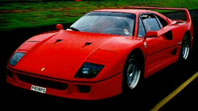
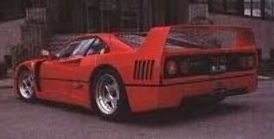

Ferrari F40


Specs
Price |
$415,000 |
Top Speed |
201mph |
Acceleration |
|
Engine |
|
0-30mph |
2.3sec |
Type |
Twin turbo V8, 32valve Quad cam |
0-60mph |
4.2sec |
Displacement |
3.0L(2936cc) |
0-100 |
8.9sec(est.) |
Power |
478hp@7000rpm |
1/4 mile |
12.8sec/?mph |
Torque |
425 lbs-ft@4000rpm |
Weight |
2,425 lbs |
Handling |
|
Gas mileage |
|
Skidpad |
.98g |
City |
N/A |
600ft slalom |
N/A |
Highway |
N/A |
Powertrain |
Mid-engined, rear wheel drive, 6 speed manual |
(? = incomplete data or unverified info, N/A = info Not Available)
Beyond the specs:
The classic Ferrari, the amazing F40, this car offers excellent performance even for today's standards. Few Ferrari's if any, have the kind of torque this car's 3-liter twin turbo V8 produces. It is simply amazing, and while the cheaper Lamborghini Diablo is slightly faster than it, it can easily out handle it and as the speeds increase the Diablo loses more and more of its acceleration edge. However, if you wanted to beat that Diablo in an F4 than a factory kit from Ferrari could add 200hp and with its lightweight, those extra horses will definitely make a very noticeable change. Some people claim that the F40 is better than its replacement the F50, but that is said about most vehicles that replace another as good as this one. This vehicle, unlike the Diablo and the new F50, is focus solely on performance and has an interior which is stripped down a bit (it does not even have power assisted steering). This very refined modern Ferrari classic will greatly reward the skilled driver who dares to drive it the way it was built for.
~Oracle